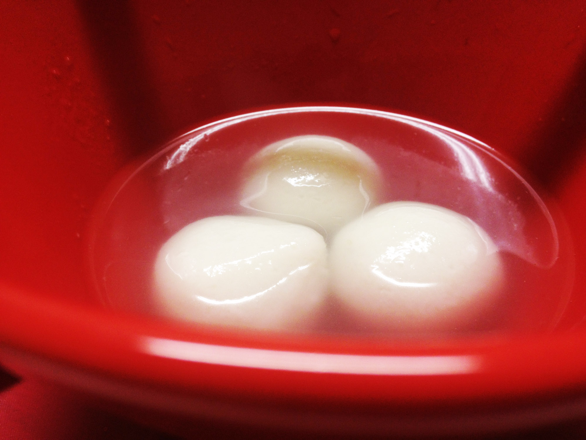
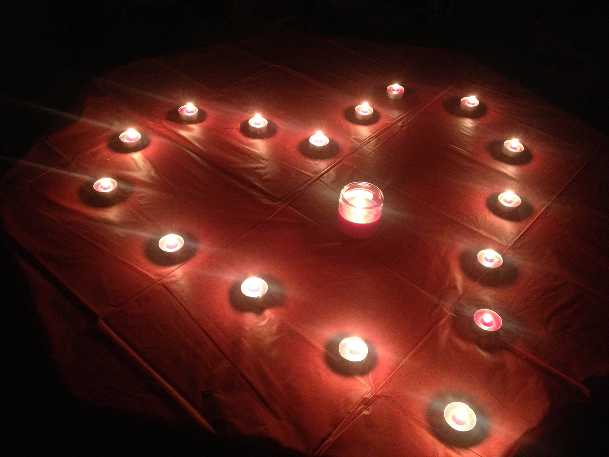

WHEN VALENTINE’S DAY HITS THE LANTERN FESTIVAL: HOW DO CHINESE CELEBRATE?
 To have Tangyuan with your family or to have dinner with your boy/girlfriend?
That is a big conflict for a lot of Chinese, especially young people, this year.
February 14, a s we all know, is Valentine’s Day in Western Countries. It is, however, also a very crucial day for Chinese. On the Chinese Lunar Calendar this year, February 14 is the Lantern Festival, which is a very important part of Spring Festival. Families gather around during dinnertime and have this day’s special food – Tangyuan, made of glutinous rice flour with sweet fillings inside. The end of the Lantern Festival means the beginning of hard work in a fresh new year.
Spending time with your family during the Lantern Festival is a Chinese tradition of more than 2,000 years. It is natural for Chinese people to celebrate this traditional Chinese festival. However, after the introduction of western culture, Chinese people now also enjoy the western Valentine’s Day.
In the history of Chinese festivals, family affection is always the spirit. Nearly all traditional festivals emphasize the family. The Spring Festival and the Lantern Festival celebrate the union of the family in the New Year. The Mid-autumn Festival celebrates the reunion (or the hope of reunion) of the family in the year. Tomb-sweeping Day is for the family to get together to remember their ancestors. We can see from the above that two main characters of Chinese Festival are family and tradition.
Unlike those traditional festivals in China, western cultures have different themes in different festivals. For example, Valentine’s Day is for couples, Christmas is for families, Halloweens is for kids. When these concepts were introduced into China, they appealed to Chinese people, especially the concept of Valentine’s Day.
During the old times, Chinese people used to hide their love or emotions. That is the way to behave properly and to be treated as upper class. However, the young generation, especially after the Reform and Opening-up, receives advanced education and accept the concept of equality and freedom. They need to express their emotion and love loud to the one they love and the world. That’s why Valentine’s Day is so popular in modern China. An interesting phenomenon is that after Valentine’s Day becoming widely accepted in China, the smart Chinese merchants create a Chinese Valentine’s Day based on a Chinese love fairy tale.
It seems that this is a conflict choice of which festivals to celebrate among Chinese young people. However, in fact, it is actually the conflict of two cultures. But this conflict may not be a bad thing.
As one of my friends kidding on this phenomenon: “Why should we be bothered by this choice? We are lucky that we can have Tangyuan with chocolate fillings so that we can celebrate both Valentine’s Day and the Lantern Festival.”
More information please visit yaruchen.com.
More about this website, please visit about.
If you have more questions, please give us an email
| 1 | 2 | 3 | 4 |
| A | B | ||